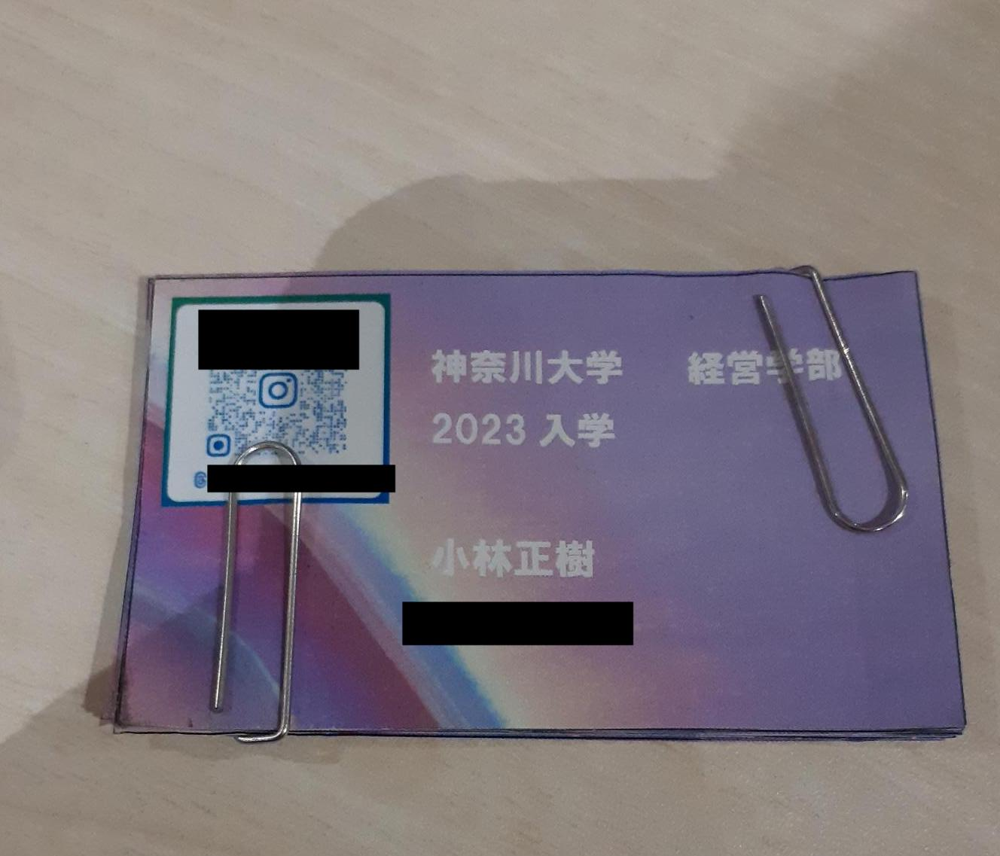
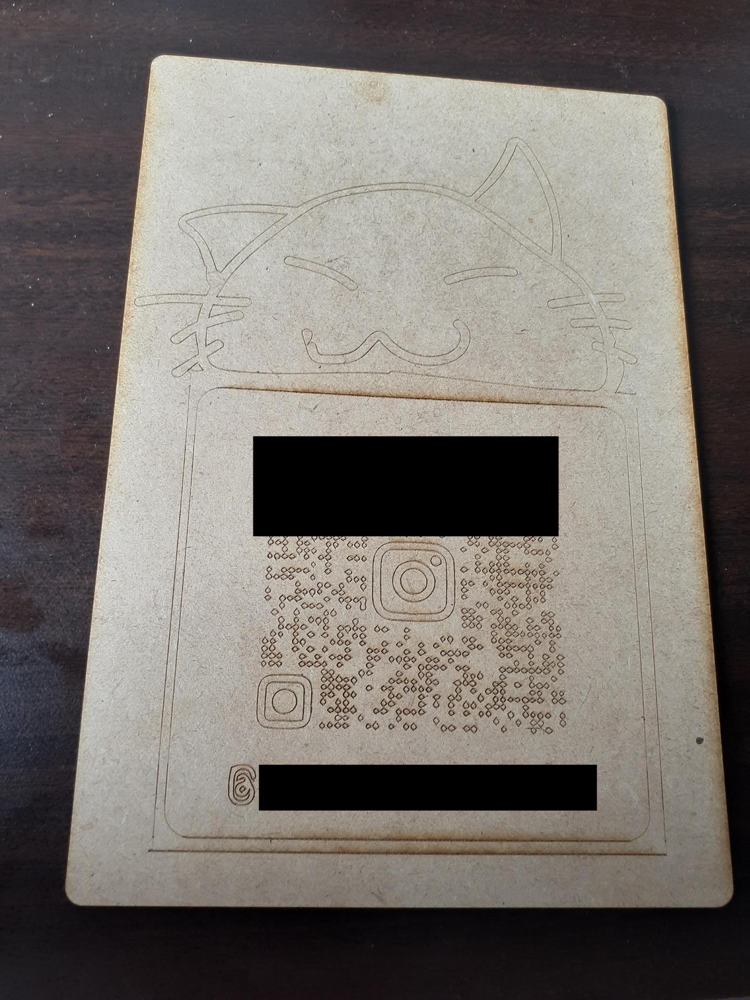

第2回デジタルファブリケーション作品
レーザーカッターの活用と心が動くもの作り
インスタ名刺
作ろうとした理由

私は前から相手と連絡先を素早く交換したいと思っていて、
すでにInstagramの名刺を作っていました。
しかし普通のプリント用紙なのでペラペラで使いづらかったのです。
そこでこの機会に心を動かす、名刺を作ろうと思いました。
手法
QRコードのjpgファイルをadobe illustratorに入れる
→画像をベクターに変換する
→adobeillustratorでいい感じの絵を描く
→.aiの拡張子ファイルをレーザーカッターに入力する。
→調整の後完成

レーザーカッターの注意点
-
角を合わせること、切り出す位置の調整
-
カット中は目を離さないこと
まとめ
今回は画像->adobeイラストレーター->レーザーカッター
の一連の手順を経験した。
完成品は結果的にQRコードとして機能しなかった。
原因は大きすぎて、
QRコードの粒の形が変わってしまったためだと考えられる。
次にレーザーカッターを使用する際は、読み込めるQRコードと
サイコロのような簡単な立体物を作りたい。
また、心を動かすというのは、興味を引くということ、
と似たものであると考えれば、単に可愛いだけでは
足りないかもしれない。